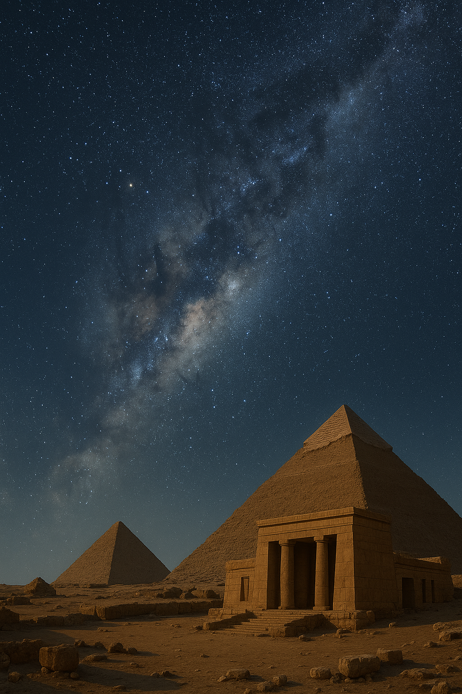

Nel lungo cammino della civiltà umana, il cielo stellato ha rappresentato una costante fonte di meraviglia, timore e ispirazione. Dall’età della pietra fino all’epoca romana, diverse culture hanno osservato la volta celeste e attribuito ad essa significati profondi, intrecciando strettamente il rapporto con la natura e con il divino. Di seguito esamineremo come la visione del cielo si sia trasformata attraverso i millenni – dai popoli del Neolitico alle grandi civiltà del Vicino Oriente (Mesopotamia ed Egitto), fino ai Greci, Etruschi e Romani – considerando aspetti di religione, mitologia, astronomia e arte propri di ciascun periodo.
Con il passaggio dalla vita nomade paleolitica alla sedentarietà neolitica (a partire da ~10.000-8.000 anni fa), gli esseri umani iniziarono a sviluppare un nuovo rapporto con il cielo. La nascita dell’agricoltura rese fondamentale riconoscere e registrare con precisione i cicli celesti collegati alle stagioni: vennero osservati i punti di levata e tramonto del Sole ai solstizi e agli equinozi, nonché fenomeni più complessi come i lunistizi (estremi del moto lunare). Il cielo, prima ammirato in modo spontaneo dai nomadi paleolitici, divenne ora un orologio naturale per regolare semine e raccolti. La regolarità osservabile del Sole (che sorge e tramonta ogni giorno in punti differenti dell’orizzonte a seconda delle stagioni) e della Luna (con i suoi cicli mensili) fece sì che il tempo iniziasse ad essere misurato in base ai moti celesti. Questa nuova attenzione portò anche a profonde credenze religiose. Probabilmente i popoli neolitici identificarono nel Sole una potente divinità, dalla quale dipendevano i cicli della natura e la sopravvivenza di ogni essere vivente. Non a caso, in Europa e nel Mediterraneo si diffuse un ampio culto solare, accompagnato dalla costruzione di monumenti allineati astronomicamente.
Numerosi siti megalitici di quest’epoca testimoniano tali conoscenze: ad esempio, il celebre cromlech di Stonehenge in Inghilterra o il grande cerchio di pali di Goseck in Germania (risalente a ca. 6900 anni fa) erano progettati per allinearsi con il sorgere e il tramonto del Sole nei giorni dei solstizi. Queste strutture fungevano da osservatori solari e probabilmente da calendari primitivi, permettendo di prevedere i momenti cruciali dell’anno agricolo. Alle osservazioni dell’alba e del tramonto – simboli universali di morte e rinascita nel ciclo della natura – erano quasi certamente associati significati religiosi specifici. In sintesi, per l’uomo neolitico il cielo divenne sia un calendario vivente sia la dimora di forze divine: lo sguardo agli astri era insieme un atto pratico (per scandire il tempo) e un gesto sacro di connessione con l’ordine misterioso dell’universo.
Con l’avvento delle prime grandi civiltà urbane in Mesopotamia ed Egitto (a partire dal IV-III millennio a.C.), l’osservazione del cielo fece un ulteriore salto di qualità. In Mesopotamia, la volta stellata esercitò un fascino enorme sui Sumeri, Babilonesi e Assiri, i quali però non si limitarono alla contemplazione: furono i primi a trasformare l’interesse per gli astri in vere e proprie indagini scientifiche, con calcoli matematici ed osservazioni sistematiche registrate per iscritto. Abbiamo infatti tavolette cuneiformi con i primi cataloghi di stelle e almanacchi astronomici, nonché testi mitologici che svelano come i fenomeni celesti fossero inseriti nel contesto religioso.
I Mesopotamici associavano gli astri principali a divinità: ad esempio, Ishtar (Inanna) corrispondeva al pianeta Venere, Marduk a Giove, Nergal a Marte ecc. Interpretavano e predicevano eventi celesti – eclissi, apparizioni di comete – come presagi per gli affari umani, gettando le basi sia dell’astronomia matematica sia dell’astrologia. Furono probabilmente i Babilonesi a suddividere per primi il cielo in dodici segni zodiacali lungo l’eclittica, elaborando uno schema zodiacale che avrebbe influenzato tutte le culture successive. In definitiva, il cielo mesopotamico era abitato da dei e miti (come la cosmogonia che narra la vittoria del dio Marduk sul drago celeste Tiamat), ma era anche oggetto di studio accurato: un connubio di mitologia e scienza che ha lasciato un enorme patrimonio di conoscenze agli astronomi greci e, per riflesso, a noi moderni.
In Egitto, la visione del cielo assunse caratteri originali, mescolando strettamente conoscenze astronomiche e immaginario mitologico. Gli antichi Egizi svilupparono già nell’Antico Regno (III millennio a.C.) un raffinato calendario basato sul ciclo della stella Sirio (Sothis) e sulle stagioni del Nilo, e conoscevano numerose costellazioni e pianeti. Tuttavia, ogni aspetto tecnico era inserito in una cornice religiosa: al centro della teologia egizia stava il culto del Sole, venerato come principio cosmico di unità e rinnovamento. Il Sole era rappresentato in diverse forme a seconda delle fasi del suo viaggio quotidiano – Ra a mezzogiorno, Atum al tramonto, Osiride durante la notte nell’oltretomba, Khepri all’alba – narrando così il perenne ciclo di morte e rinascita dell’astro diurno.
Il faraone, considerato figlio di Ra, fungeva da garante dell’ordine cosmico: tramite i rituali quotidiani e la sua stessa persona divina, assicurava che il Sole sorgesse ogni giorno vittorioso sul caos, mantenendo l’armonia tra cielo e terra. Questa visione cosmologica trovò espressione anche nell’arte e nell’architettura: i soffitti delle tombe e dei templi furono decorati con elaborati mappei stellari e figure astro-teomorfe (celebre l’immagine della dea del cielo Nut dipinta sulle volte dei sarcofagi, o il Zodiaco di Dendera in epoca tolemaica).
Inoltre, i monumenti egizi spesso presentano allineamenti astronomici impressionanti: le piramidi di Giza, ad esempio, sono orientate con notevole precisione verso i quattro punti cardinali, mentre i templi solari (come quello di Amon a Karnak) sono allineati al sorgere del Sole in determinati giorni dell’anno. In sintesi, per gli Egizi il cielo era il teatro degli dei e al contempo un sistema ordinato da comprendere: essi elevarono il culto degli astri a fondamento del loro sistema politico-religioso, creando un connubio in cui astronomia, fede e potere risultavano indissolubilmente uniti.
La civiltà etrusca (fiorita in Italia centrale tra il IX e il I secolo a.C.) elaborò una visione del cielo profondamente permeata di religiosità e finalizzata all’interpretazione degli auspici. A differenza dei Greci, più inclini alla speculazione teorica, gli Etruschi osservarono il firmamento meno per curiosità scientifica astratta e più per trarne indicazioni pratiche legate alla volontà divina. In altre parole, il loro approccio alla volta celeste fu astrologico-divinatorio: consideravano infatti ogni fenomeno del cielo – il volo degli uccelli, il rumore dei tuoni, il manifestarsi dei fulmini, l’eclissi di Sole o di Luna – come un messaggio degli dèi da decifrare. Si riteneva che il macrocosmo celeste e il microcosmo umano fossero intrinsecamente connessi, per cui conoscendo i segni nel cielo si potevano predire eventi terreni e assecondare la volontà divina. Di conseguenza, religione e studio del cielo risultavano inscindibili: solo tramite complessi riti divinatori si poteva comprendere il volere degli dèi e agire di conseguenza. Gli sacerdoti etruschi (auguri e aruspici), in quanto mediatori tra cielo e terra, godevano di enorme prestigio e influenza.
Gli stessi Romani, dopo aver sottomesso l’Etruria, continuarono a consultare aruspici etruschi per ottenere interpretazioni autorevoli dei segni celesti. Un elemento cardine della visione etrusca era la concettualizzazione dello spazio sacro del cielo, detto templum. Il sacerdote tracciava una croce con il bastone rituale (lituus) orientata esattamente secondo gli assi Nord-Sud (cardo) ed Est-Ovest (decumano), suddividendo idealmente la volta celeste in quattro quadranti. Ciascun quadrante era a sua volta ripartito in altre quattro parti, per un totale di 16 settori celesti. A ogni settore erano associati particolari divinità e attributi: ad esempio, secondo la tradizione (tramandata poi dal romano Marco Tarquinio Prisco), la zona orientale del cielo era considerata favorevole e abitata da dèi benigni, quella occidentale sfavorevole e sede di dèi ostili; il Nord (pars postica) era legato alle divinità celesti superiori e agli dèi dell’oltretomba, mentre il Sud (pars antica) corrispondeva a divinità terrestri.
Questo schema cosmogonico, ben visibile in manufatti come il celebre Fegato di Piacenza (modello bronzeo di fegato ovino con iscrizioni etrusche del II-I sec. a.C.), serviva da “mappa” per interpretare i segni: la superficie del fegato è suddivisa in settori con incisi i nomi di divinità, tra cui compaiono due nomi del dio Solare etrusco (Cath o Usil) e il nome del dio Lunare (Tivr), oltre a divinità dei 12 segni zodiacali e dei 7 pianeti allora conosciuti. Ciò rivela come gli Etruschi avessero assimilato concetti astronomici (zodiaco e pianeti) in funzione del loro sistema religioso.
Anche l’architettura sacra etrusca rifletteva l’intento di “portare sulla Terra le coordinate del cosmo”. I templi etruschi venivano in genere eretti su alture, con la vista aperta su tutti e quattro i punti cardinali, e rigorosamente orientati secondo il cardo e il decumano tracciati dall’augure. Si ritiene che tali allineamenti cardinali avessero lo scopo di armonizzare lo spazio costruito con l’ordine celeste, rendendo il tempio un microcosmo terrestre del macrocosmo divino. Questa usanza fu in seguito ereditata dai Romani nell’urbanistica: le nuove città fondate da Roma venivano impostate secondo un reticolo ortogonale (il castrum) orientato Nord-Sud/Est-Ovest, così come gli accampamenti militari e la centuriazione agraria, proprio per suggellare l’armonia fra la terra e il cielo.
In ambito artistico, benché l’arte etrusca non presenti mappe celesti elaborate come quelle egizie o greche, troviamo comunque simboli astronomici: ad esempio, monili e specchi incisi riportano spesso figure alate o astrali; un caso è quello di una fibula etrusca in bronzo (VII sec. a.C.) dove compare una sfinge alata con elementi riconducibili al sole (pettinatura “hatorica”) e una processione di animali fantastici, forse a simboleggiare la processione delle stelle fisse. Complessivamente, per gli Etruschi il cielo era un testo sacro da decifrare: ogni stella e fenomeno atmosferico portava un significato voluto dagli dèi, e la vita comunitaria – dalle decisioni politiche alle attività agricole – veniva regolata in base a tali auspici.
Gli Etruschi formalizzarono diverse pratiche di divinazione celeste, tra cui:
Attraverso questi rituali, la società etrusca cercava costantemente di interpretare il cielo per vivere in sintonia con le forze naturali e divine: il loro mondo era quindi intriso di una religiosità cosmica, in cui la natura forniva segnali e il cielo era l’autorità ultima a cui guardare per ogni decisione importante.

I Greci antichi svilupparono un rapporto col cielo che attraversò un’evoluzione notevole: dalle spiegazioni mitologiche delle origini del cosmo si passò gradualmente, già in età arcaica, a interpretazioni sempre più razionali e scientifiche. In epoca arcaica (VIII-VI secolo a.C.), la mitologia dominava la comprensione dell’universo: i poemi di Omero ed Esiodo sono le prime testimonianze letterarie dell’interesse greco per il firmamento. Omero, nell’Iliade, offre una delle più antiche descrizioni poetiche della volta stellata, paragonando le miriadi di fuochi del campo troiano alle stelle luminose in un cielo limpido.
Nell’Odissea e nelle opere di Esiodo troviamo citazioni di costellazioni (le Pleiadi, Orione, l’Orsa) impiegate come riferimenti per la navigazione e per il calendario agricolo – segno che già i Greci pre-classici avevano familiarità con il cielo notturno e i suoi ritmi stagionali. In questi primi secoli, il cielo era ancora popolato da dèi antropomorfi: Urano (il Cielo) era il progenitore degli dèi nella Teogonia di Esiodo, Zeus era il signore del cielo e del fulmine, Elio personificava il Sole su un carro fiammeggiante, Selene era la dea Luna. Le costellazioni venivano identificate con eroi, animali o figure del mito – ognuna con la sua leggenda – a significare che per il Greco comune il firmamento fosse un immenso arazzo di storie sacre proiettate sulle stelle. Tuttavia, proprio nella culla della filosofia greca, avvenne una svolta: tra il VI e il V secolo a.C., i pensatori presocratici iniziarono a liberare la cosmologia dal mito, cercando spiegazioni naturali ai fenomeni celesti.
Talete di Mileto, secondo la tradizione, sarebbe stato capace di predire un’eclisse solare; Anassimandro concepì un cosmo con la Terra sospesa nello spazio al centro di ruote celesti, Pitagora e i pitagorici introdussero l’idea di una Terra sferica e dei numeri come principio armonico dell’universo. Nel V secolo, filosofi come Parmenide e Anassagora compresero la causa naturale delle fasi lunari e ipotizzarono che il Sole fosse una massa di fuoco anziché una divinità su un carro. Quest’attitudine razionale culminò nel IV secolo a.C. con Platone e soprattutto Aristotele, i quali elaborarono modelli cosmologici organici: l’universo venne concepito come una serie di sfere concentriche cristalline, con la Terra immobile al centro (cosmo geocentrico). Aristotele descrisse il cielo come un regno di etere perfetto e incorruttibile, contrapposto al mondo terrestre mutevole – ereditando in parte l’antica intuizione (comune fin dal Neolitico) che il cielo fosse sfera di perfezione. Il suo modello dell’universo, perfezionato poco dopo dall’astronomo Eudosso di Cnido (che introdusse sfere rotanti per spiegare i movimenti planetari), divenne un riferimento fondamentale.
Nel III secolo a.C., Aristarco di Samo osò perfino proporre un’ipotesi eliocentrica, ponendo il Sole al centro e la Terra in movimento intorno ad esso – intuizione straordinaria, sebbene non accettata dalla maggioranza dei contemporanei. Parallelamente alla speculazione filosofica, i Greci svilupparono l’astronomia osservativa e applicata. Già nel V-IV secolo a.C. Metone e Callippo elaborarono calendari basati su cicli solenno-lunari; Ipparco di Nicea (II sec. a.C.) catalogò circa un migliaio di stelle con coordinate celesti e scoprì la precessione degli equinozi; infine Claudio Tolomeo (II sec. d.C., in ambiente greco-alessandrino sotto dominazione romana) sintetizzò tutto il sapere astronomico antico nell’Almagesto, fissando il modello geocentrico matematicamente più accurato dell’epoca. Quest’ultimo – con la Terra al centro, il Sole e i pianeti orbitanti su epicicli e deferenti – combinato con la cosmologia aristotelica, divenne la visione “ufficiale” del cosmo per oltre mille anni.
Nonostante la crescente razionalità scientifica, la dimensione religiosa e artistica del cielo continuò a permeare la cultura greca. L’astrologia personale (cioè l’idea che la posizione degli astri al momento della nascita influenzi il destino individuale) fu in realtà accolta dai Greci solo in età ellenistica, filtrata dalla tradizione mesopotamica: Tolomeo stesso scrisse un trattato di astrologia (Tetrabiblos) accanto all’Almagesto. Sul piano religioso, i Greci mantennero il culto degli dèi olimpici: Zeus era invocato come dio del cielo atmosferico (dispensatore di pioggia e tuoni), Apollo era identificato col Sole (Febo), Artemide con la Luna (Selene), e si praticavano riti e festività legate ai cicli stagionali (ad esempio le celebrazioni in onore di Demetra e Persefone legate agli equinozi e al raccolto).
L’arte greca spesso raffigurò temi celesti: vasi e rilievi mostrano Helios sul carro solare o Selene a cavallo, le dodici fatiche di Eracle furono associate ai dodici segni zodiacali in epoca ellenistica, e non dimentichiamo che lo zodiaco con i suoi simboli si diffonde proprio nell’arte pavimentale e musiva greco-romana. Un esempio di altissimo livello artistico-scientifico è il Globo Celeste retto dal titano Atlante: la scultura nota come Atlante Farnese (copia romana di un originale greco del II sec. a.C.) rappresenta Atlante che sorregge la sfera celeste recante l’equatore, l’eclittica, la fascia dello zodiaco e le costellazioni principali intagliate in rilievo.
Tale opera dimostra l’accuratezza con cui i Greci avevano mappato il cielo e la volontà di raffigurare l’ordine cosmico in forma artistica. In sintesi, la civiltà greca fu la prima a conciliare pienamente mito e ragione nella visione del cielo: da un lato conservarono un ricco patrimonio mitologico e simbolico (che nutriva la religione e l’arte), dall’altro gettarono le basi dell’astronomia scientifica, cercando nell’armonia matematica del cosmo una conferma del principio divino che permea la natura.
I Romani, eredi sia degli Etruschi sia dei Greci, svilupparono una visione del cielo che fu in parte sincretica e in parte orientata all’utilità pratica. Da un lato assorbirono interamente il patrimonio di conoscenze greche in astronomia, dall’altro mantennero l’approccio etrusco di legare strettamente i fenomeni celesti alla religione di Stato e al potere politico. I Romani non fecero avanzare in modo significativo la teoria astronomica – si limitarono a adottare il modello tolemaico-geocentrico e a divulgarlo nelle opere enciclopediche in lingua latina (ad esempio Plinio il Vecchio, I sec. d.C., nella Naturalis Historia riassume la cosmologia e l’astronomia greca).
Ciò nonostante, l’interesse per il cielo pervase tutta la società romana, trovando espressione in vari ambiti. Sul piano religioso e politico, l’osservazione del cielo rimase fondamentale. La pratica etrusca degli auspicia (osservazione del volo degli uccelli e altri segni celesti) fu istituzionalizzata: magistrati e generali romani, accompagnati dagli auguri, consultavano il cielo prima di intraprendere qualsiasi azione pubblica importante (dalle battaglie alle elezioni).
In età imperiale, l’uso dell’astrologia divenne dilagante: molti imperatori tenevano astrologi di corte e spesso cercavano di legittimare il proprio potere con segnali celesti favorevoli. Non era raro che il princeps – l’imperatore – facesse propagandare di essere nato sotto una congiunzione astrale propizia o si facesse raffigurare in associazione al dio Sole nelle statue e sulle monete. Un esempio emblematico è l’apparizione della cometa dopo l’assassinio di Giulio Cesare (44 a.C.), interpretata da Ottaviano (Augusto) come l’anima di Cesare ascesa in cielo e prova della sua apoteosi: Augusto sfruttò questo evento astronomico per consolidare il proprio culto dinastico.
Così, il cielo divenne parte integrante dell’ideologia imperiale romana – uno strumento per leggere la volontà divina a sostegno dell’Impero. Contestualmente, la conoscenza astronomica fu impiegata con scopi pratici e utilitaristici. L’astronomia serviva innanzitutto a perfezionare il calendario romano (riformato da Giulio Cesare nel 46 a.C. con l’introduzione del calendario giuliano basato sul Sole) e a regolare l’agricoltura, la vita economica e civile. Inoltre fu applicata all’arte della navigazione e dell’orientamento: marinai e viaggiatori romani usarono la Stella Polare e altre stelle per guidarsi nei loro spostamenti notturni.
Anche l’ingegneria e l’architettura ne beneficiarono: la fondazione di colonie e accampamenti seguiva – come accennato – precise regole di orientamento astronomico derivate dagli Etruschi, garantendo che le città fossero “allineate” col cosmo. L’agrimensura romana (arte di tracciare le proprietà terriere) impiegava strumenti come il groma e osservava la posizione del Sole per definire direzioni est-ovest esatte, sempre con l’idea che l’ordine terreno dovesse rispecchiare quello celeste. Anche nella cultura popolare e nell’arte romana traspare il fascino verso la volta stellata.
Molti poeti latini inseriscono nei loro versi riferimenti astronomici: Virgilio nelle Georgiche consiglia agli agricoltori di seminare osservando le Pleiadi e Sirio; Ovidio nei Fasti descrive i miti delle costellazioni; Manilio compose addirittura un poema didascalico interamente sugli astri (Astronomica). Le case romane di classe agiata presentavano decorazioni a tema celeste: a Pompei e Ercolano sono stati rinvenuti affreschi e mosaici raffiguranti stelle, segni zodiacali e personificazioni di pianeti. Oggetti di lusso come cofanii e specchi potevano avere intarsi o incisioni con simboli zodiacali, a testimoniare una divulgazione “visuale” dell’astrologia.
Numerose statue inoltre rappresentano figure mitologiche celesti – ad esempio, oltre al già citato Atlante Farnese con il globo astrale, troviamo statue di Selene con il crescente lunare in testa, di Sol/Apollo con aureola raggiata, e piccole statuette di Mercurio (il pianeta-deità protettore dei commercianti). Un caso interessante sono le decorazioni nella Domus Aurea di Nerone a Roma, dove pare esistesse una volta affrescata con uno zodiaco cosmico e un meccanismo rotante che imitava il movimento dei cieli (secondo la descrizione di Svetonio). Insomma, il popolo romano – pur non dedicandosi in massa alla speculazione cosmologica – era circondato da riferimenti al cielo stellato nella vita quotidiana, segno di una diffusa ammirazione estetica e simbolica per gli astri.
In conclusione, l’epoca romana segnò il compimento di un percorso millenario nella visione del cielo. Rispetto ai timori e ai culti ingenui dell’uomo preistorico, i Romani disponevano ormai di un ricco bagaglio di conoscenze astronomiche ereditate dai Greci, e di pratiche religiose elaborate ereditate dagli Etruschi e da altre culture. Eppure, il cielo continuava ad essere per loro qualcosa di più di un semplice insieme di corpi fisici: era ancora portatore di significati politici e spirituali, oltre che oggetto di bellezza. Il cielo dei Romani era al tempo stesso calendario, bussola e presagio – una presenza venerabile che dall’alto regolava il tempo umano e testimoniava la grandezza dell’ordine cosmico sotto il quale fioriva la civiltà. In tal modo, osservando il firmamento, le antiche culture – dai primi agricoltori neolitici fino ai cittadini dell’Impero – hanno sempre cercato di comprendere il proprio posto nell’universo, proiettando tra le stelle le proprie divinità, paure, speranze e conoscenze. Questa lunga evoluzione della visione del cielo riflette lo sviluppo del pensiero umano: dal mito alla scienza, senza mai perdere di vista la profonda connessione tra l’uomo, la natura e il divino scritta nelle stelle.